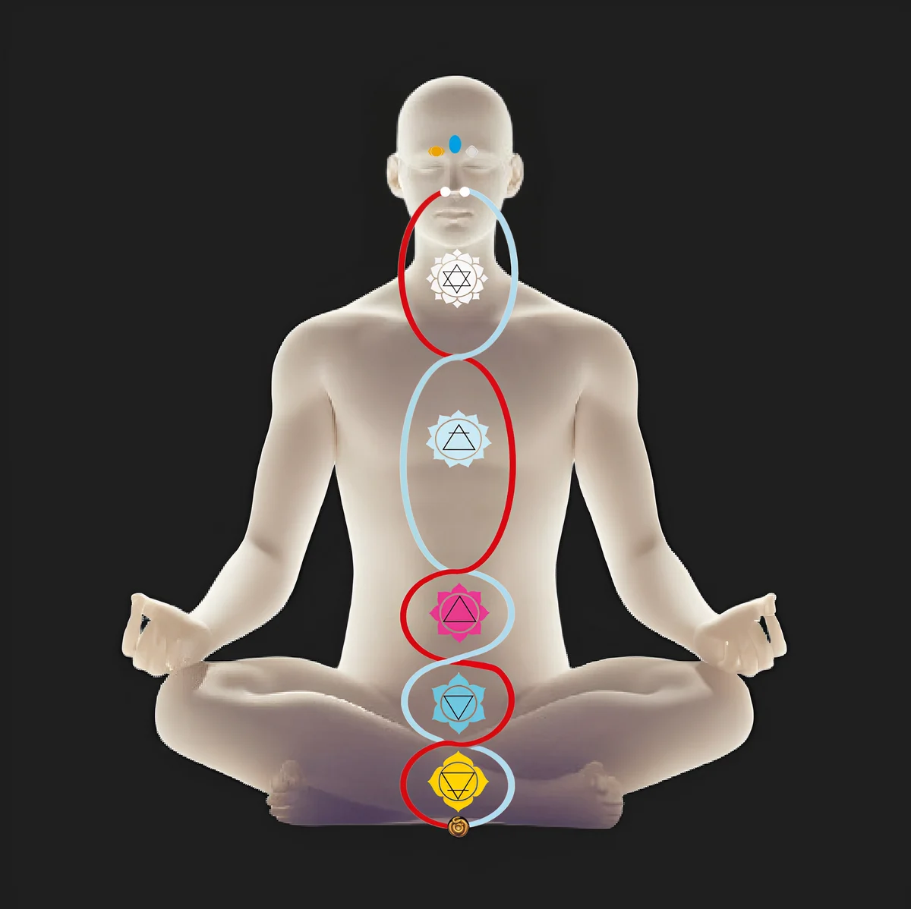

Der Lernpfad führt von der Wurzel bis zur Stirn. Wähle eine Station im Bild oder hier unten. Später kann jede Station eine geführte Meditation, ein Hörbuch oder ein Flipbook bekommen.
Eigene Seite
Das dritte Auge wird erst geöffnet, wenn das Gemüt besiegt wurde.